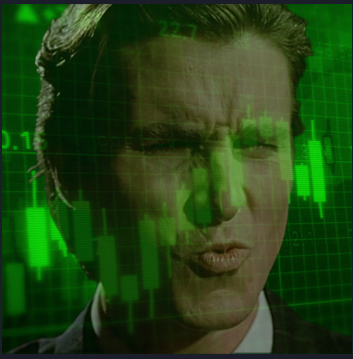
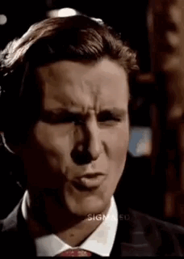

The Meme Token for the Brave and Bold
SIGMA INDEX 6900 is a community-driven meme token, reborn from the ashes of its past, and ready to dominate the digital world. Join us on this legendary journey.
In a hidden corner of the blockchain, a token emerged with an epic destiny: SIGMA INDEX 6900. Born in the chaos of the meme world, it quickly became a legend. SIGMA represents strength, independence, and the rebellious spirit of the “lone wolf” in crypto—the kind of individual who goes against the grain and wins. But, like many mythological heroes, the token was dumped, forgotten, and left deep in the net, like a hidden gem waiting to be rediscovered.
Now, the community has united. The chosen ones, the “Brothers of SIGMA,” have decided to bring the token back to the light. SIGMA INDEX 6900 is not just a meme token; it’s a symbol of resilience and the strength of independence. Like the hero who rises after defeat, SIGMA is ready to ascend from the ashes, stronger and bolder than ever before. It’s the return of a blockchain warrior, destined to dominate once again.
In the world of crypto, only the strongest survive, and SIGMA INDEX 6900 isn’t just a coin, it’s a movement. Its community consists of bold individuals, each embodying the Sigma spirit: never following the crowd, always blazing their own trail. Now, the mission is clear: to restore SIGMA to its rightful place—at the top of the meme token food chain. The “Brothers of SIGMA” are ready to march with pride, armed with memes, irony, and determination.
SIGMA INDEX 6900 won’t stop here. With the power of the community, the token will expand into uncharted territories. Viral memes, creative staking, unexpected collaborations, and a continuous expansion of its dominance on the blockchain. The future is bright, and anyone who wants to be part of this revolution is welcome. Because SIGMA isn’t just a token, it’s a way of life.
Relaunch of SIGMA INDEX 6900 on pump.fun. The community unites to bring back the legendary token.
4 million SIGMA tokens have been burned, reducing the total supply from 1 billion to 996 million, making the token even more scarce.
Once the bonding curve is complete, SIGMA INDEX 6900 will be automatically listed on Raydium. The listing fee has already been paid, and liquidity will be provided.
Expand community engagement with viral memes, creative staking, and partnerships. Continue to grow the meme token movement.
The future of SIGMA INDEX 6900 will include partnerships, staking, and collaborations. Explore new opportunities in DeFi and beyond.
Witness the power of SIGMA through this epic animation!
Follow the journey of SIGMA INDEX 6900 on pump.fun. See the latest updates, and join the community in pumping this token to the next level!
Visit SIGMA on pump.fun